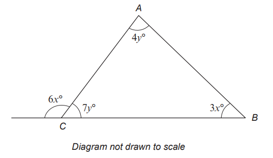

Notable Notes About Word Problems
(1.) Word problems are written in standard British English.
(2.) Some word problems are very lengthy and some are unnecessary. Those ones are meant to discourage you from even trying.
(3.) Word problems in Mathematics demonstrate the real-world applications of mathematical concepts.
(4.) Embrace word problems. See it as writing from English to Math.
Take time to:
(a.) Read to understand. Paraphrase and shorten long sentences as necessary.
(b.) Re-read and note/underline the vocabulary Math terms written in English.
(c.) Translate/Write important sentences one at a time.
(d.) Review what you wrote to ensure correctness.
(e.) Solve the math, and check your solution in the word problem.
Does that solution makes sense?
If it does, you may be correct.
If it does not, please re-do it. For example, if you were asked to calculate the length of something and you get a negative number, then you will need to re-do it.
For ACT Students
The ACT is a timed exam...60 questions for 60 minutes
This implies that you have to solve each question in one minute.
Some questions will typically take less than a minute a solve.
Some questions will typically take more than a minute to solve.
The goal is to maximize your time. You use the time saved on those questions you
solved in less than a minute, to solve the questions that will take more than a minute.
So, you should try to solve each question correctly and timely.
So, it is not just solving a question correctly, but solving it correctly on time.
Please ensure you attempt all ACT questions.
There is no negative penalty for a wrong answer.
For SAT Students
Any question labeled SAT-C is a question that allows a calculator.
Any question labeled SAT-NC is a question that does not allow a calculator.
For JAMB Students
Calculators are not allowed. So, the questions are solved in a way that does not require a calculator.
For WASSCE Students: Unless specified otherwise:
Any question labeled WASSCE-FM is a question from the WASSCE Further Mathematics/Elective Mathematics
For GCSE Students
All work is shown to satisfy (and actually exceed) the minimum for awarding method marks.
Calculators are allowed for some questions. Calculators are not allowed for some questions.
For NSC Students
For the Questions:
Any space included in a number indicates a comma used to separate digits...separating multiples of three
digits from behind.
Any comma included in a number indicates a decimal point.
For the Solutions:
Decimals are used appropriately rather than commas
Commas are used to separate digits appropriately.
Solve all questions.
Use appropriate variables.
Indicate the method(s) used.
Show all work.
Interpret your solutions.
| Starting price | Listing fee |
|
$0.01 — $4.99 $5.00 — $19.99 $20.00 — $49.99 $50.00 and up |
$0.25 $0.50 $1.00 $2.00 |
| Selling price | Selling fee |
|
$0.01 — $49.99 $50.00 and up |
5% of selling price 3% of selling price |

| School | Number of tickets sold | Ticket sales |
|
A B C D E |
200 250 300 150 275 |
$1,400 $1,650 $1,800 $1,350 $1,625 |